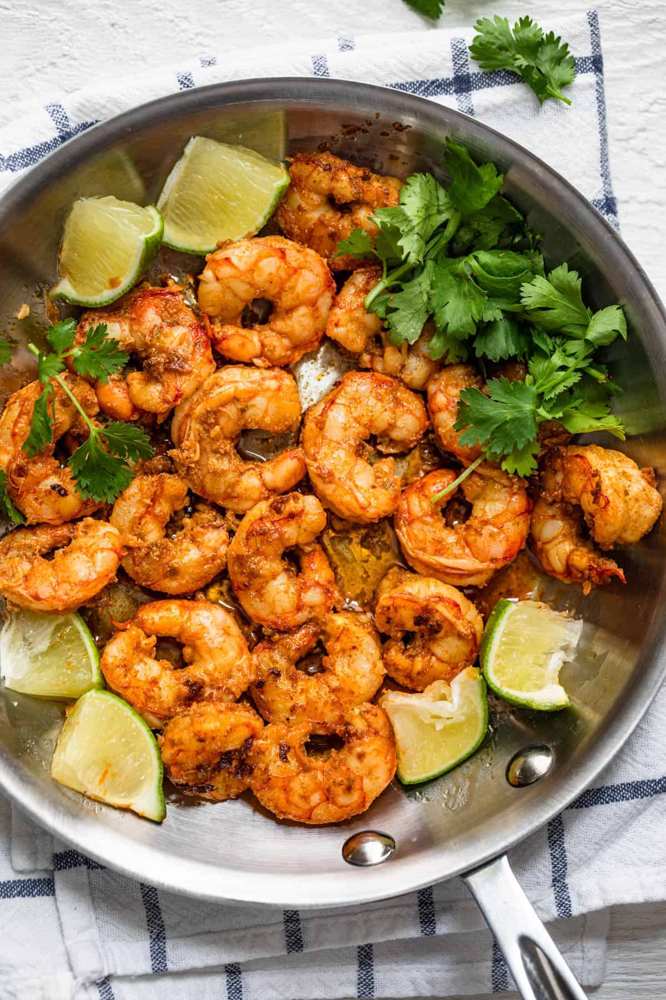

Chili Lime Shrimp

Description
These delicious chili and lime shrimp are loaded with flavor and perfect for a quick and easy low carb meal. Made with simple ingredients and quick to cook.
Add some flavor to your weeknight meals with this chili lime shrimp. Quick and easy to make with simple ingredients, the marinated shrimp is a great addition to any family meal and takes minutes to cook.
Ingredients
- Shrimp
- Lime Juice
- Extra Virgin Olive Oil
- Garlic Cloves
- Chili Powder
- Cumin
- Kosher Salt
- Cilantro
Steps
- In a large bowl, whisk together the lime juice, olive oil, garlic, chili powder, cumin, and salt. Add the uncooked shrimp to the marinade, cover with plastic wrap, and refrigerate 30 minutes.
- Add shrimp to a large heated pan over medium heat, and cook until pink and opaque. Remove from heat and stir in cilantro.